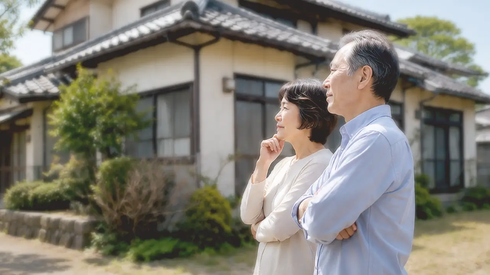

固定資産税の負担が続く
空き家を所有している限り、固定資産税や都市計画税などの負担が発生します。
AKIYA SALE
相続した実家、長年放置している空き家、
残置物が残ったままの住宅など、
空き家に関するお悩みはありませんか？
空き家買取バンクでは、空き家の状況やご事情に合わせて、最適な解決方法をご提案いたします。
無料相談はこちら
空き家を所有している限り、固定資産税や都市計画税などの負担が発生します。

人が住まなくなることで劣化が進みやすくなり、修繕費用が発生する場合があります。

雑草や樹木の繁茂、害虫や不法投棄など、近隣とのトラブルの原因になることがあります。

管理状態によっては、行政から改善指導を受ける場合があります。
お電話・メール・LINEよりお気軽にご相談ください。
物件の状況や周辺環境を確認します。
物件状況やご希望に合わせて、最適な進め方をご提案します。
内容にご納得いただいたうえで契約手続きを進めます。
お引渡し後も必要に応じてサポートします。
空き家に関するご相談に特化しているため、状況に応じたご提案が可能です。
家具や生活用品が残った状態でもご相談いただけます。
古物商許可を取得しており、残置物の整理に関するご相談にも対応しています。
相続した実家や、相続手続きに関するお悩みにも対応しています。
司法書士・税理士・弁護士など、専門家と連携しながらサポートします。
一般的には売却が難しいとされる物件でも、状況に応じてご提案します。

空き家売却のご相談で多いのが、「荷物が残ったまま」というお悩みです。空き家買取バンクでは、残置物に関するご相談にも対応しています。

相続した実家
相続した実家をどうするか悩まれていた方のご相談例です。

長期空き家
管理が難しくなっていた空き家のご相談例です。

残置物あり
室内に荷物が残った状態でご相談いただいた事例です。

遠方管理
遠方に住んでいて管理が難しい空き家のご相談例です。

再建築不可
条件に不安がある物件についてのご相談例です。
はい、残置物が残った状態でもご相談いただけます。
状況により異なりますので、まずは現在の状況をお聞かせください。
はい、遠方にお住まいの方からのご相談にも対応しています。
はい、売却を決めていない段階でもお気軽にご相談ください。
ご相談・査定は無料です。

相続した実家、長年放置している空き家、残置物が残る住宅など、空き家に関するお悩みは一人で抱え込まずにご相談ください。